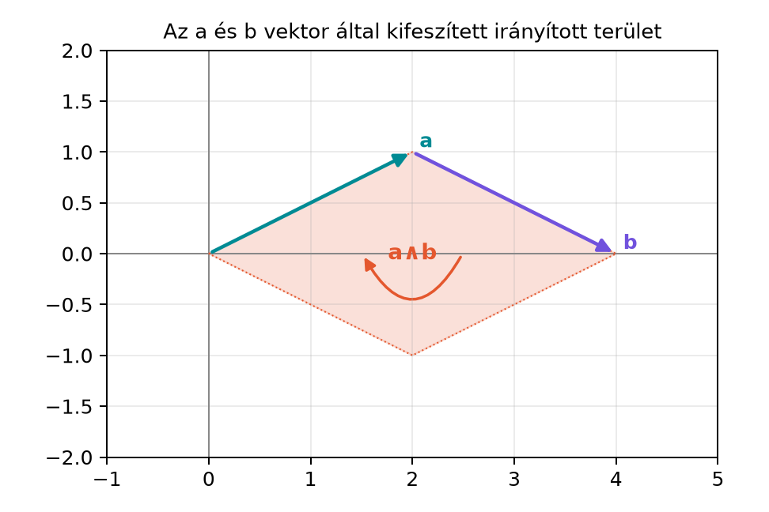

A koordinátageometriában két vektorról általában kétféle információt
szoktunk kiolvasni: mennyire mutatnak egy irányba, illetve mekkora
irányított területet feszítenek ki. Az elsőt a skalárszorzat, a
másodikat a külső szorzat adja meg. A skalárszorzat azonban éppen azt az
információt dobja el, amit a külső szorzat megtart, és fordítva.
Például az
és
vektorok esetén
tehát a skalárszorzatból nem látjuk a derékszöget, a külső szorzatból
viszont igen. Ha az
és
párhuzamos vektorokat nézzük, akkor
így most a külső szorzat nem árulja el, hogy a két vektor egy
egyenesre esik, a skalárszorzat azonban igen. Kézenfekvő tehát egy olyan
szorzatot keresni, amely a két információt egyetlen objektumban, együtt
tárolja. A geometriai szorzat éppen ezt teszi.
4.1.2 Szemléletes kép: egy
vektorpár, amit a két szorzat együtt ír le
Legyen
Ezek sem nem párhuzamosak, sem nem merőlegesek: skalárszorzatuk
,
tehát van párhuzamos összetevőjük is; külső szorzatuk pedig nem nulla,
tehát területet is kifeszítenek. Az alábbi ábra a két vektor által
kifeszített irányított területet szemlélteti.

Az a és b vektor által kifeszített
irányított terület - A kifeszítő vektorok a = 2e1+e2 és b = 2e1−e2; a
körüljárás az a-ból b-be sorrendből adódik, a példában a∧b =
−4e12.
A vektorok koordinátái
és
.
A kifeszített parallelogramma területe
,
irányítása pedig negatív, mert a
vektorból a
vektorba való forgás az
pozitív iránnyal ellentétes. A skalárszorzat ugyanakkor
,
tehát a két vektor nem merőleges. A geometriai szorzat mindkét adatot
tartalmazni fogja: egy skalárt és egy bivektort.
4.1.3 A geometriai szorzat
definíciója
A geometriai szorzat alapgondolata, hogy a két ismert szorzatot
egyetlen kifejezésben egyesítjük.
Definíció. Két síkvektor,
és
geometriai szorzata
A jobb oldal első tagja skalár, második tagja bivektor. Az összeg egy
új típusú objektum, amelyet multivektornak nevezünk; a skalár és a
bivektor itt egy közös algebrai kifejezés két, különböző fokszámú
komponense. A szorzást egymás mellé írással jelöljük, és nem tekintjük
előre kommutatívnak.
A definícióból és a két rész szimmetriatulajdonságából közvetlenül
leolvasható a geometriai szorzat felbontása. Mivel
a definíciót a másik sorrendre felírva
A két egyenletet összeadva, illetve kivonva egymásból:
Ebből
A skalárszorzat tehát a geometriai szorzat szimmetrikus, a külső
szorzat pedig az antiszimmetrikus része. Ez egyben azt is mutatja, hogy
a geometriai szorzat általában nem kommutatív: a sorrend felcserélésekor
a bivektorrész előjelet vált.
Továbbvitt eredmény. A
felbontást és a belőle adódó szimmetrikus/antiszimmetrikus részeket a(z)
A geometriai szorzat axiómái alfejezet bővíti ki
a teljes algebra szabályaivá. A szorzatból visszanyert skalár- és
bivektorrész a(z) Vektor inverze és a(z) Vetítés és visszautasítás alfejezetben lesz
kulcsfontosságú, a szög visszaolvasása pedig a(z) Forgatás a síkban alfejezetet készíti elő.
4.1.4 Kidolgozott példa
Legyen ismét
Először a skalárszorzatot számítjuk ki koordinátákkal:
A külső szorzat képlete
és
esetén
ezért
A geometriai szorzat tehát
A másik sorrendben
Látható a különbség: a skalárrész
mindkét szorzatban, a bivektorrész pedig az egyikben
,
a másikban
.
Ellenőrizzük a Lagrange-azonosságot. A vektorhosszak négyzete:
ezért
A skalár- és bivektorrészek négyzetösszege:
ami megegyezik a hosszak szorzatával. A szorzat tehát nem veszített
el semmit: mind a hosszak, mind a bezárt szög, mind az irányított
terület visszaolvasható belőle.
4.1.5 Mit mond a geometriai szorzat
a vektorokról?
Három jellegzetes esetet érdemes külön is kimondani.
Ha a két vektor párhuzamos, azaz
valamilyen
valós számmal, akkor
így
A szorzat tisztán skalár: nincs bivektorrész, mert a két vektor nem
feszít ki területet. Speciálisan
esetén
Ha a két vektor merőleges, akkor
,
ezért
A szorzat tisztán bivektor; például az ortonormált bázisvektorokra
.
Az általános esetben a szorzat két részre bontható aszerint, hogy
-nek
mekkora az
-val
párhuzamos és arra merőleges összetevője. Írjuk fel
ahol
és
.
Mivel
párhuzamos
-val,
,
ezért
Mivel
merőleges
-ra,
,
ezért
Az összeg így
Ez a felbontás jól mutatja, hogy a skalárrész a párhuzamos, a
bivektorrész pedig a merőleges összetevőt hordozza. A geometriai szorzat
tehát egyszerre kódolja, hogy a két vektor mennyire mutat egy irányba,
és hogy mekkora irányított területet feszítenek ki.
4.1.6 A Lagrange-azonosság
A fenti képből következik egy fontos azonosság, amely azt fejezi ki,
hogy a kétféle információ négyzete együtt visszaadja a hosszak
négyzetének szorzatát.
Levezetés. Legyen
Ekkor
A bivektor nagyságának négyzete az együttható négyzete, tehát
Így
Kifejtve a két négyzetet:
A
tagok kiesnek, és csoportosítva:
ami
Tehát
Ez a Lagrange-azonosság síkban. Ha felhasználjuk,
hogy
akkor a Lagrange-azonosság éppen a
trigonometrikus azonosság vektoros alakja. A geometriai szorzat tehát
természetes módon hordozza a szögfüggvényeket: a skalárrész a
koszinuszos, a bivektorrész nagysága a szinuszos tényezőt
tartalmazza.
4.1.7 Az „almák és körték”
ellenvetés
Felmerülhet az ellenvetés: hogyan lehet egy skalárt és egy bivektort
összeadni? A hétköznapi szemléletben egy hosszúság és egy terület nem
adható össze, ahogyan „almát körtéhez” sem adunk. A geometriai
algebrában azonban a
kifejezés nem két azonos típusú mennyiség összege, hanem egyetlen új
objektum, egy multivektor két komponenssel.
A gondolat nem idegen a matematikától. A komplex számokat is
alakban írjuk, ahol a
valós számhoz egy
képzetes szám van hozzáadva; a
mégsem „alma és körte”, hanem egyetlen komplex szám, amelynek van valós
és képzetes része. A komplex számokkal korábban a(z) Szögfüggvények, forgatás és a komplex számok
röviden alfejezetben találkoztunk. Ugyanígy a
egy olyan multivektor, amelynek skalárrésze
,
bivektorrésze
.
A részek külön-külön is vizsgálhatók, de együtt többet mondanak. Ezt a
fokszámok szerinti felbontást a(z) A G(2) algebra:
multivektorok és fokszámok alfejezetben dolgozzuk ki
részletesen.
4.1.8 Tipikus hibák és
félreértések
A szorzat sorrendjének felcserélése. Mivel a
skalárszorzat kommutatív, sokan azt várják, hogy
.
Ez azonban csak akkor igaz, ha a bivektorrész nulla, azaz a két vektor
párhuzamos. Általában
;
a különbség éppen a külső szorzat kétszerese.
A geometriai szorzat összetévesztése a két rész
szorzatainak „vektori” összegével. A
eredménye általában nem vektor, hanem skalár+bivektor típusú
multivektor. Ha valaki azt mondja, hogy „a geometriai szorzat egy skalár
meg egy bivektor összege”, az helyes, de nem egy vektortérbeli
vektorösszeadásról van szó, hanem egy több fokszámú algebrai
objektumról.
Az abszolút érték elhagyása a bivektor
nagyságánál. A Lagrange-azonosság
tagjában a bivektor nagyságának négyzete szerepel, ezért az irányítás
előjele nem befolyásolja az egyenlőséget. Ha valaki a
bivektorral számol, annak nagysága
,
nem
.
A párhuzamos vektorok esetének általánosítása.
Nem minden nem merőleges vektorpár ad tisztán skalár szorzatot. Csak a
pontosan párhuzamos vektorokra tűnik el a bivektorrész; ha a vektoroknak
van merőleges összetevőjük is, a bivektorrész megjelenik.
4.1.9 Feladatok
Fogalmi kérdés. Miért nem elegendő önmagában a
skalárszorzat, illetve önmagában a külső szorzat két vektor relatív
helyzetének leírásához? Adj példát két olyan vektorpárra, amelyek
skalárszorzata egyenlő, de külső szorzatuk nem.
Kézi számolás. Legyen
és
.
Számítsd ki
,
,
és
értékét. Ellenőrizd a Lagrange-azonosságot.
Levezetési feladat. Mutasd meg, hogy a
definícióból, valamint a skalárszorzat kommutativitásából és a külső
szorzat antiszimmetriájából következik:
Miért hasznos ez a felbontás a geometriai szorzat vizsgálatában?
Alkalmazási feladat. Legyen
és
.
Bontsd fel
-t
-val
párhuzamos és merőleges komponensre, majd számítsd ki a geometriai
szorzatot. Igazold, hogy a szorzat skalárrésze a párhuzamos
komponensből, bivektorrésze pedig a merőleges komponensből
származik.
4.1.10 Megoldások
1. A skalárszorzat csak a párhuzamos, a külső
szorzat csak a merőleges jelleget látja. Például legyen
Ekkor
és
,
tehát nem egyenlőek; olyan példa kell, ahol egyenlő a skalárszorzat.
Vegyük inkább:
Ekkor
és
,
tehát a skalárszorzat egyenlő, de
így a külső szorzat különbözik. A skalárszorzat önmagában nem tudja
megkülönböztetni a merőleges eltérés irányát.
2. A skalárszorzat:
A külső szorzat:
Így
A hosszak:
tehát
.
A részek négyzetösszege:
a Lagrange-azonosság teljesül.
3. A definíció szerint
A másik sorrendre:
mert a skalárszorzat szimmetrikus, a külső szorzat pedig
antiszimmetrikus. Összeadva:
Kivonva:
Ez azért hasznos, mert a geometriai szorzatból pusztán összeadással
és kivonással visszanyerhető a skalárszorzat és a külső szorzat, vagyis
a geometriai szorzat nem kevesebb, hanem több információt hordoz, mint a
két része külön-külön.
4. Először a párhuzamos komponens:
Itt
,
,
így
A merőleges komponens:
Ellenőrzés:
.
A geometriai szorzat:
A skalárszorzat
.
A külső szorzat:
Tehát
.
A párhuzamos komponenssel számolva:
a merőleges komponenssel:
Így valóban a skalárrész a párhuzamos, a bivektorrész a merőleges
komponensből adódik.
4.1.11 Rövid összefoglaló
Két síkvektor geometriai szorzata
ahol az első tag skalár, a második bivektor; az eredmény egy
multivektor. A felbontás szimmetrikus és antiszimmetrikus részekre:
Párhuzamos vektorokra a szorzat skalár, merőleges vektorokra
bivektor. Általános esetben a skalárrész a párhuzamos, a bivektorrész a
merőleges összetevőt hordozza. A Lagrange-azonosság